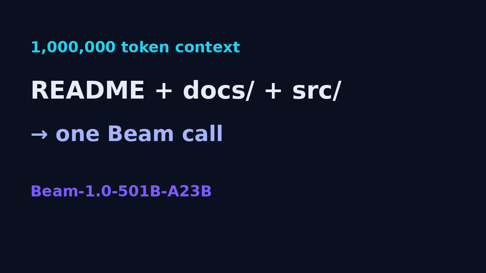
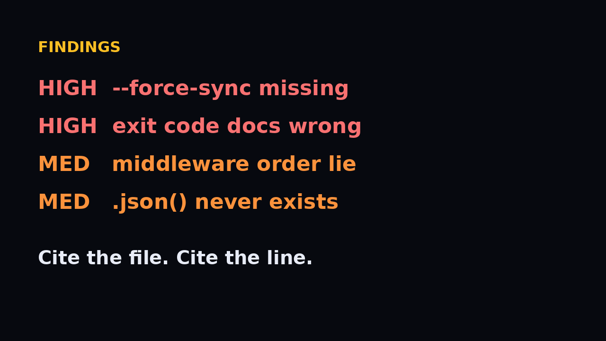
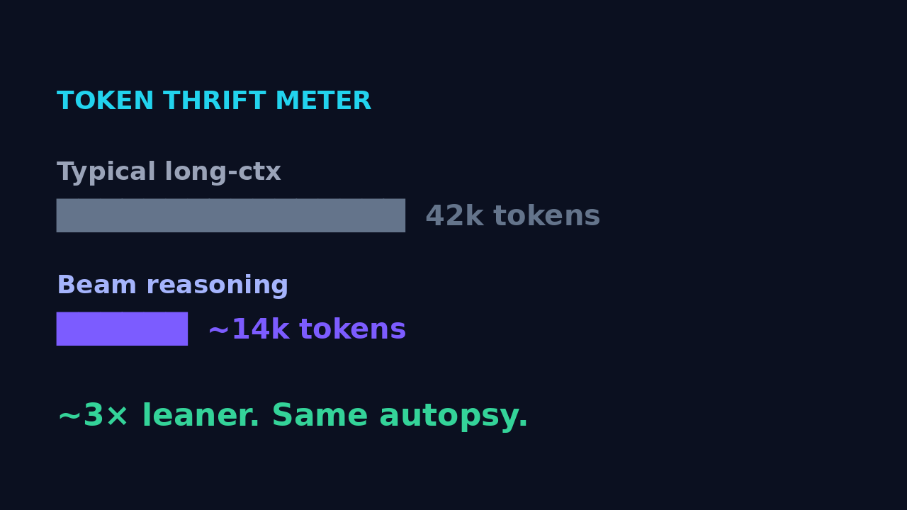
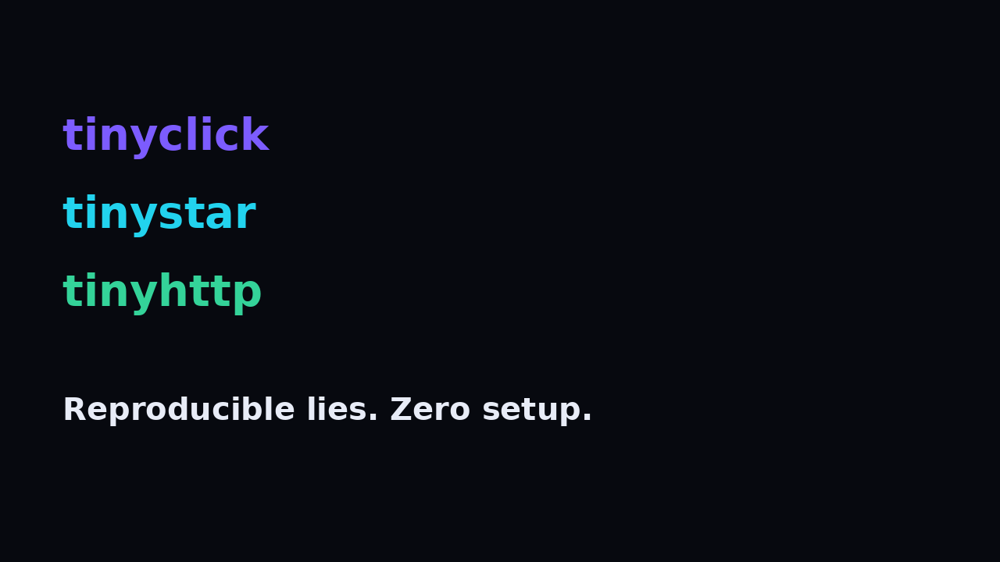
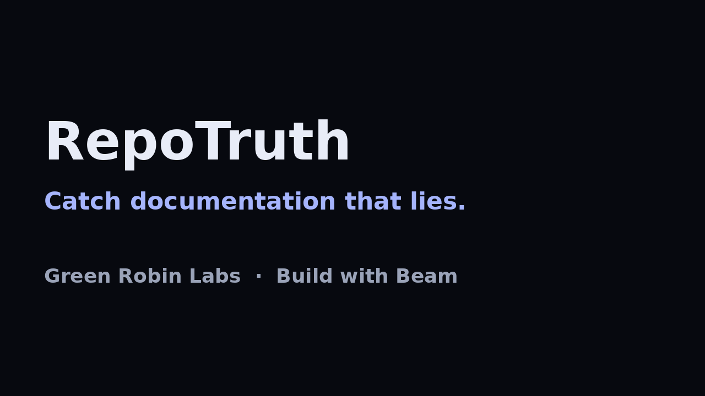

Hook
Documentation that lies.
RepoTruth · Build with Beam
1M context
Whole repo. One Beam call.

RepoTruth · Build with Beam
Findings
Cite the file. Cite the line.

RepoTruth · Build with Beam
Thrift meter
~3× leaner reasoning.

RepoTruth · Build with Beam
Fixtures
Reproducible lies.

RepoTruth · Build with Beam
CTA
RepoTruth · Green Robin Labs

RepoTruth · Build with Beam